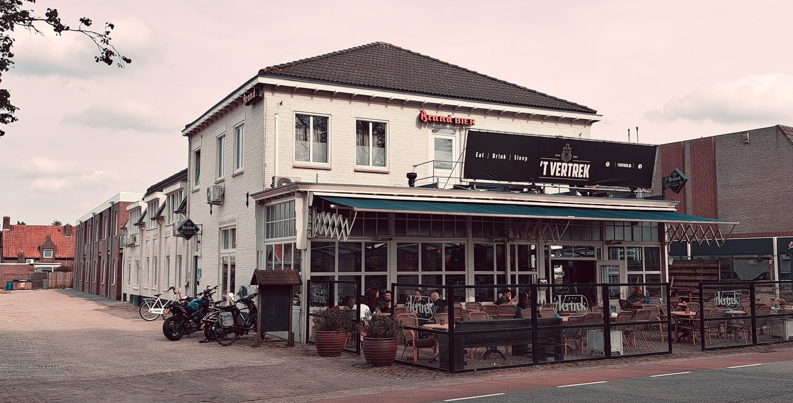
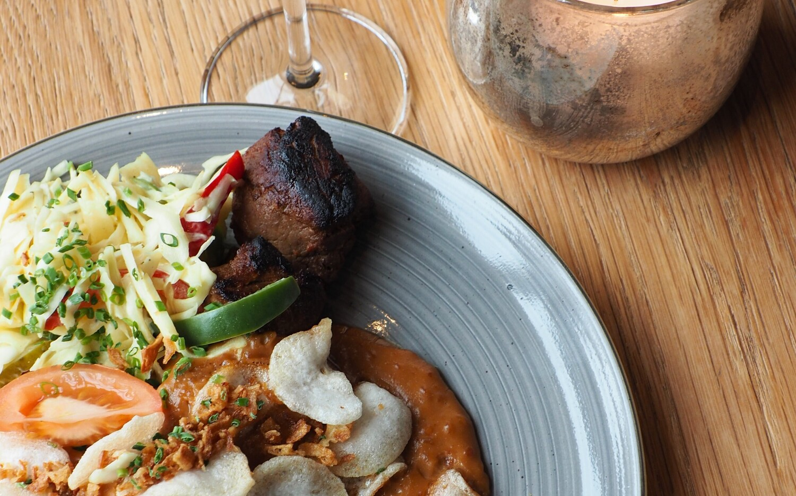
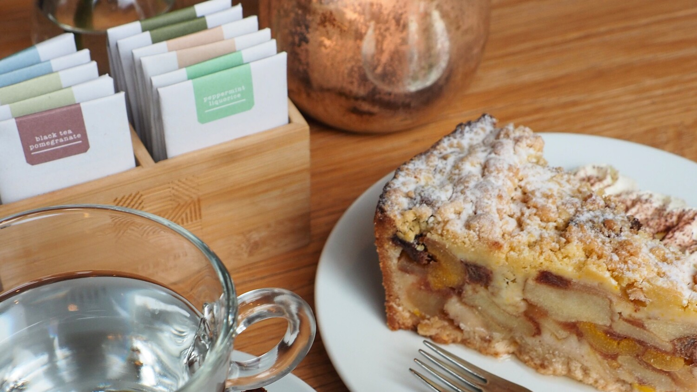
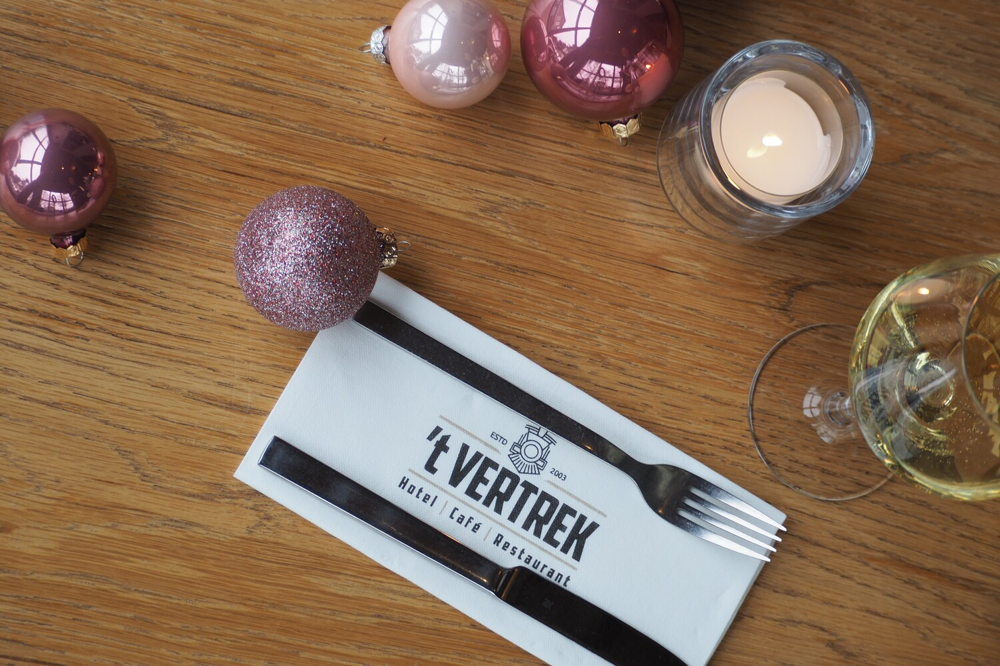
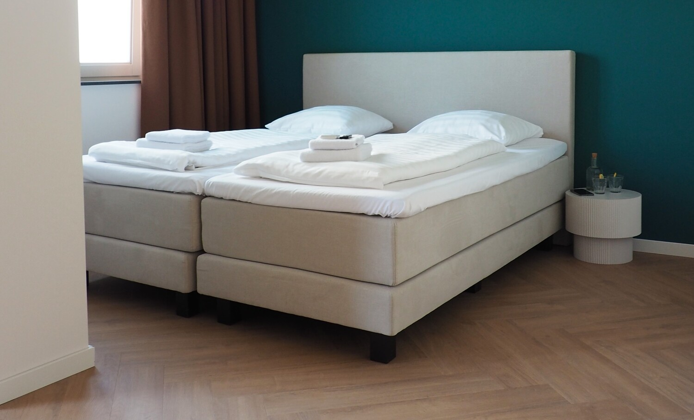
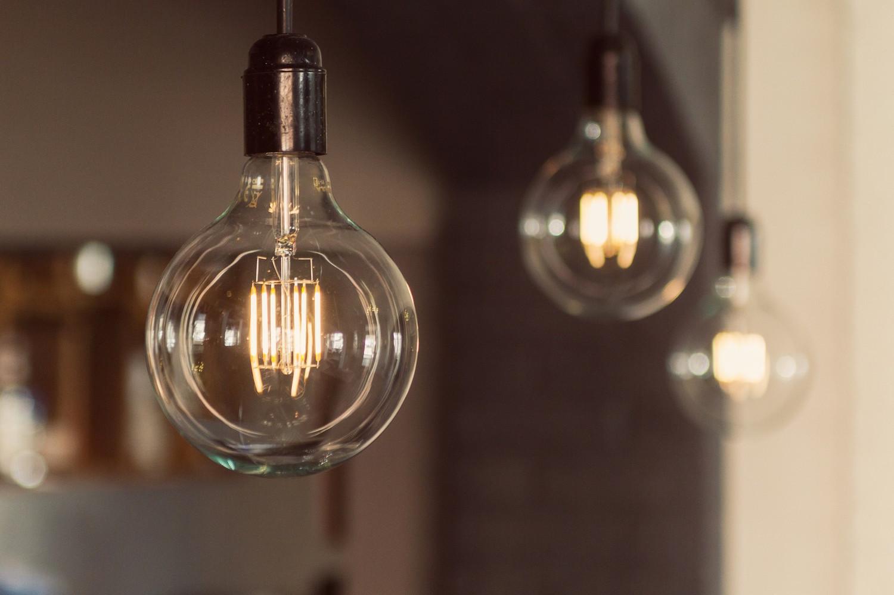

't Vertrek
Eat|Drink|Sleep
Café, restaurant en hotel tegenover het station van Boxmeer. Voor een kop koffie, een borrel, een biertje of een maaltijd.
Tegenover het station
Altijd vriendelijk ontvangen
't Vertrek is een gezellig café, hotel en eetgelegenheid tegenover het station van Boxmeer, waar je altijd vriendelijk wordt ontvangen.
Ontbijten, lunchen, dineren, borrelen, vergaderen, slapen of gewoon een kop koffie drinken: het kan hier allemaal, 7 dagen in de week. Onze menukaarten volgen de seizoenen en worden regelmatig vernieuwd, dus je wordt telkens verrast.



1ste & 2de Kerstdag 2026
Kerst bij 't Vertrek
Reserveer nu voor een 4- of 5-gangen diner in een supergezellige kerstsfeer. Alle kerstdiners worden geserveerd met drie amuses, van het huis. Wil je lang tafelen? Dat kan. Al onze wijnen zijn per glas te bestellen, dus neem rustig de tijd om met elkaar te genieten. Je bent van harte welkom vanaf 17.00 uur.
Voorgerechten
- Bietje op 3 wijzen bereid
- Bonbon van Serano vulling van gevogelte, tomaten gel
- Tonijn tataki unagi
Soepen
- Bisque rouille, gerookte gamba
- Wild bouillon dubbel getrokken, profiteroles
- Rode curry groenten, wonton
Tussengerechten
- Rijstevel schelpje roergebakken paddenstoelen & bamboescheuten, yakitori-stijl
- Parelhoen peertje aardappel & zoete aardappel mousseline
- Kabeljauw lamellen wortelcrème & dilleschuim
Hoofdgerechten
- Gerookte watermeloensteak gebakken halloumi, chimichurri
- Gemarineerde botervis kruidenschuim
- Ossenhaas medaillons paksoi, paddenstoelenjus
Nagerecht
- Verrassingsdessert
- Mangobombe witte chocolademousse, krokantje van hazelnoten
Vooraf reserveren is nodig. Kerstmenu 2026 als PDF

Sleep
Hotel 't Vertrek
Een sfeervol hotel waar service en klantvriendelijkheid op nummer één staan. Naast een uitgebreid ontbijtbuffet verwennen onze koks je graag met een lunch of diner. 34 kamers, allemaal van alle gemakken voorzien, veel met een ruim balkon.
Toeristenbelasting Boxmeer € 3,50 per persoon per nacht. Btw inbegrepen, geen servicekosten.
Op de kamer
Eigen douche en toilet, smart-tv, airconditioning en wifi. De kamers zijn bereikbaar per trap en via de begane grond.
Inchecken
Check-in vanaf 15.00 uur, check-uit vóór 11.00 uur. Ontbijtbuffet in het restaurant: ma t/m vr 07.00 – 10.00 uur, za en zo 08.00 – 10.00 uur.
Roomservice
Alle gerechten van de menukaart zijn als roomservice te bestellen zolang de keuken open is.
Bereikbaarheid
Treinstation Boxmeer op 2 minuten lopen, 2 minuten rijden van de snelweg en een ruime gratis parkeerplaats voor het hotel.
In de omgeving
Wandel- en fietsroutes zoals het Pieterpad, historische centra, musea en de Maas. Nijmegen, Venlo en Kleve liggen binnen 40 km; het centrum van Boxmeer is tien minuten lopen. Ook handig voor zakelijke reizigers: grote bedrijven liggen op loopafstand.
Goed om te weten
- Huisdieren welkom in overleg, € 15 per dier per nacht
- Rookvrij hotel, kamers en restaurant
- Betalen: contant, pin, American Express, Mastercard, Visa

Feesten, partijen & vergaderen
Iets te vieren?
Op zoek naar een geschikte ruimte voor een feest, een vergadering of een andere gelegenheid? Er zijn wekelijks bijeenkomsten in het restaurant of de kleine zaal. Neem gerust contact op: samen bespreken we alles en zorgen we dat het tot in de puntjes geregeld is.
Werken bij 't Vertrek
Altijd bedrijvigheid
't Vertrek is een hotel én een restaurant: het ene moment ben je aan het inchecken, het volgende serveer je lunch. In de zomer is het terras open en er zijn regelmatig events en acties. Dat maakt het werk afwisselend, uitdagend en leuk.
Geen passende vacature? Stuur je cv en een korte motivatie naar info@tvertrek.nl.
Vacatures
- Zelfstandig werkend kok
- Kok
- Restaurant manager
- Medewerker bediening
- Ontbijtmedewerker
- Keukenhulp
- Afwashulp
Reserveren & contact
Tot zo bij 't Vertrek
Stationsweg 12
5831 CR Boxmeer
0485-577017
info@tvertrek.nl
Restaurant 7 dagen per week geopend. Kom gerust eens langs.
Tegenover station Boxmeer, gratis parkeren voor de deur. Volg ons op Instagram en Facebook: @hetvertrekboxmeer.